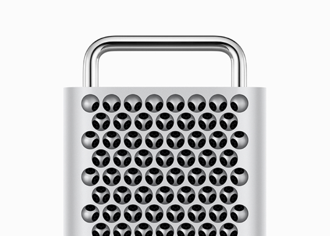
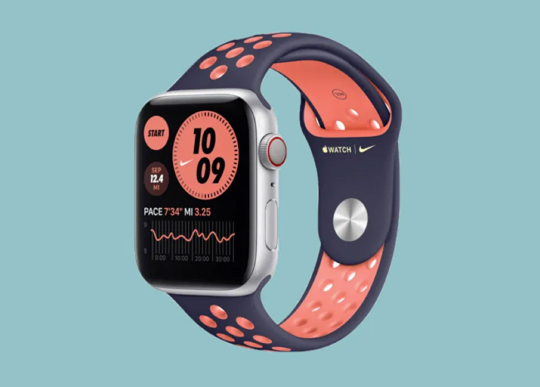
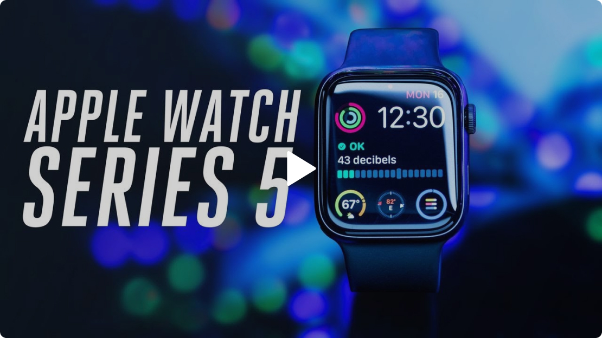

Apple Ekosistemiyle Günlük Hayatı ve
İş Akışını Geliştirin
Meltem Faruk . 1 saat önce
MacBook, uzun yıllardır kullanıcılarına şık tasarımı, güçlü performansı ve güvenilir işletim sistemi ile üretkenlikte sınırları zorlama imkanı sunuyor. Gerek taşınabilirliği, gerek yüksek çözünürlüklü ekranı, gerekse optimize edilmiş pil ömrü sayesinde gün boyu kesintisiz çalışabilirsiniz. Donanım ve yazılım arasındaki uyum, uygulamaların hızlı ve sorunsuz çalışmasını sağlar, böylece yaratıcı projelerinizden kodlamaya, sunum hazırlamadan video düzenlemeye kadar her işinizi kolaylıkla halledebilirsiniz.
Bir MacBook sahibi olduğunuzda, sadece bir bilgisayar edinmiş olmazsınız; aynı zamanda üretkenlik ve tasarım açısından yeni bir standart belirleyen bir araç kazanırsınız. İnternet üzerindeki pek çok eğitim, rehber ve kaynakla desteklenen ekosistemi sayesinde, her seviyedeki kullanıcı için öğrenme ve gelişme imkanı da sunar. Uzun yıllar boyunca kullanılan MacBook’lar, güvenilirlikleri ve dayanıklılıklarıyla da öne çıkar; yıllarca performans kaybı yaşamadan çalışmalarınıza eşlik eder.
Sonuç olarak, MacBook sadece bir cihaz değil, iş ve yaratıcılık hayatınızın ayrılmaz bir parçasıdır. Onunla hem günlük işleri kolayca yönetebilir hem de yaratıcılığınızı özgürce ifade edebilirsiniz.

Mac Studio ile Yaratıcılığınızı Maksimuma Çıkarın
Mac Studio, güçlü donanımı ve yüksek performanslı bileşenleri sayesinde yaratıcı profesyoneller için tasarlanmış bir masaüstü bilgisayardır. Grafik tasarım, video düzenleme, 3D modelleme ve müzik prodüksiyonu gibi yoğun iş yükleri altında bile sorunsuz çalışacak şekilde optimize edilmiştir. Kompakt tasarımı, şık görünümü ve sessiz çalışma özelliği ile ofisinizde veya stüdyonuzda fark yaratır.
Mac Studio, Apple ekosistemine tamamen entegre yapısı sayesinde diğer cihazlarınızla hızlı ve kesintisiz bir iş akışı sağlar. Yüksek çözünürlüklü ekran desteği, gelişmiş işlemci ve grafik kartları ile render sürelerini minimuma indirir ve projelerinizi hızlıca tamamlamanıza yardımcı olur. Ayrıca, geniş bağlantı seçenekleri ile profesyonel çevre birimleriyle sorunsuz entegrasyon sunar.
Yapmak istediğiniz işi seviyorsanız, her şey mümkün
hale gelir.
― Steve Jobs

Apple Watch ile Hayatınızı Kolaylaştırın
Apple Watch, sadece zamanı göstermekle kalmaz; sağlık, iletişim ve günlük işlerinizde sizi destekleyen bir asistan gibi çalışır. Adım sayar, kalp ritmi ölçer, uyku takibi yapar ve bildirimlerinizi bileğinizden yönetmenizi sağlar.
Apple Watch, farklı saat yüzleri ve uygulamalarıyla tamamen kişiselleştirilebilir. Spor aktivitelerinizden takvim ve hatırlatıcılarınıza kadar pek çok işlemi kolayca takip etmenizi sağlar. Ayrıca, suya dayanıklı tasarımı ve uzun pil ömrü ile gün boyu kesintisiz kullanım sunar.
Bu cihaz, hayatınızı daha düzenli, sağlıklı ve verimli kılmak için tasarlanmıştır. Günlük rutinlerinizi Apple Watch ile optimize edebilir, hem iş hem de kişisel yaşamınızda zamanınızı daha iyi yönetebilirsiniz.
Videoyu izle
